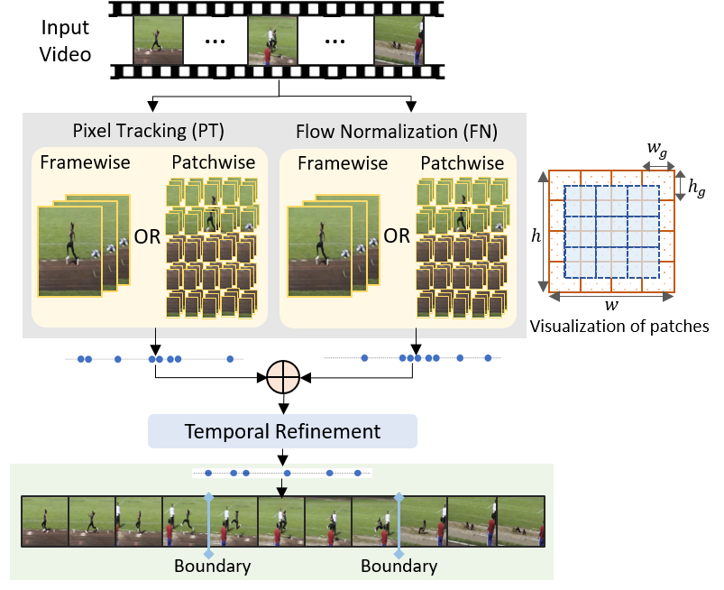

论文信息
一句话：FlowGEBD 探索一个轻量的 GEBD 路径：不训练神经网络，仅依赖运动线索寻找边界。它组合像素追踪与 flow normalization 两个非参数算法，并在末端进行时间 refinement；论文报告 Kinetics-GEBD 上 F1@0.05 为 0.713，TAPOS 平均 F1 为 0.623。
1. 核心摘要
FlowGEBD 探索一个轻量的 GEBD 路径：不训练神经网络，仅依赖运动线索寻找边界。它组合像素追踪与 flow normalization 两个非参数算法，并在末端进行时间 refinement；论文报告 Kinetics-GEBD 上 F1@0.05 为 0.713，TAPOS 平均 F1 为 0.623。
2. 研究动机
大多数边界检测依赖大量标注、光流预计算或复杂网络。作者把问题收敛为“运动连续性何时被破坏”，希望得到可解释、低计算、无训练的因果候选器。它并不声称 motion 足以恢复全部语义。
3. 方法论

原论文流程图（arXiv LaTeX 源码 images/flowgebd_flowchart__1_.png）。两条支路是 Pixel Tracking 与 Flow Normalization，末端为 temporal refinement。
整体架构与执行流程
Pixel Tracking 从基准帧采样像素并随时间追踪；可持续追踪点相对基准点显著减少时，形成边界证据。Flow Normalization 从归一化运动场提供第二条证据。二者在帧或 patch 级产生分数，temporal refinement 将峰值变为时间戳集合。任意时刻仅依赖当前与过去帧，满足 causal。
4. 实验与结果
论文将其与无监督方法比较，并报告 Kinetics-GEBD 的 F1@0.05 为 0.713；TAPOS 验证集平均 F1 为 0.623。该结果仅支持 motion-only 对通用边界的有效性，不能推出抓取成功或放置完成可由运动单独判定。
5. 优势与局限
| 优势 | 局限 / 迁移注意点 |
|---|---|
| 非参数、可解释、因果，适合作为流式系统的前级过滤器。 | 相机抖动、遮挡、空中复位或快速但无语义的运动均会造成假阳性。 |
6. 总结
它把候选生成与语义确认解耦：前者可极轻，昂贵 VLM 只在峰值候选后调用。机器人版本宜围绕任务对象和夹爪采点，并增加状态确认。
图像与来源说明
本页仅保留原论文的动机/方法图，实验结论以文字呈现。图像优先来自作者公开 LaTeX 源码；页面内图片为原图的网页展示转换，原始 PDF/PNG 文件也保存在本页 figures/ 目录。